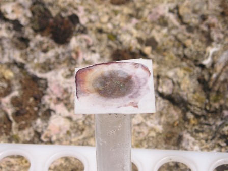
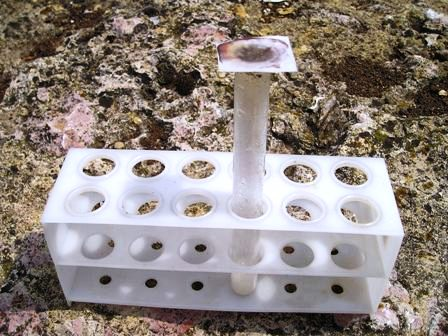
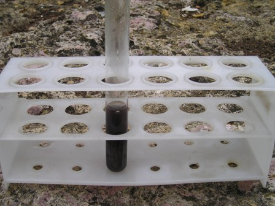

Allora, continuiamo il discorso... dalla puntata precedente.
Abbiamo a disposizione una bella capsulina piena in prevalenza di ossido di piombo, sali sodici (idrossido, carbonato), una piccola ma sicura quantità di antimoniato di sodio e una piccolissima ma incerta quantità di arseniato di sodio, dal quale confermare o smentire la presenza di arsenico nei pallini di partenza.
Ho eseguito prima il saggio di Gutzeit, che sfrutta le reazioni che avvengono tra l'idrogeno arsenicale "arsina" AsH3 ed il nitrato d'argento. L'AgNO3 in presenza di arsina si colora prima in giallo e poi in nero perchè avvengono le seguenti reazioni:
6 AgNO3 + AsH3 --> AsAg3.3AgNO3 + 3 HNO3
(il complesso di Ag è giallo)
AsAg3.3AgNO3 + 3 H2O --> As(OH)3 + 3 HNO3 + 6 Ag
(Ag nero)
Si esegue questa analisi mettendo in una provetta il materiale da esaminare assieme ad un pezzettino di zinco e ad alcuni ml di H2SO4 diluito.
Si copre la provetta con un ritaglio di carta da filtro sulla quale si mette un cristallino di nitrato d'argento e una goccia d'acqua (la sol. di AgNO3 che si forma deve essere concentratissima).


Se c'è arsenico la carta da filtro si colora prima in giallo e poi in nero, con svariati tempi e sfumature. Questa reazione è molto sensibile, ma purtroppo è disturbata dall'antimonio, che dà le medesime colorazioni.
Eseguendo questo test sul residuo prima citato, come mi aspettavo la reazione ha avuto esito positivo per la presenza sicura dell'antimonio nella lega, e i risultati si vedono nelle foto, con la colorazione a varie sfumature.
La reazione non mi ha quindi nè smentito nè confermato la presenza dell'arsenico, per il quale ho eseguito il saggio successivo di Bettendorf, che non risente della presenza di antimonio.
Se a qualche ml di una soluzione di HCl concentrato contenente tracce di arseniati si aggiunge una decina di gocce del reattivo di Bettendorf (soluzione satura di cloruro stannoso in HCl conc.), il liquido si colora più o meno rapidamente in bruno, poi via via sempre più scuro, fino ad un precipitato nero, per la formazione di arsenico metallico finemente suddiviso.
La reazione è favorita dal riscaldamento, ed è molto sensibile. L'acido cloridrico deve tassativamente essere molto concentrato.
La reazione non è citata in bibliografia, ma con buona probabilità potrebbe essere la seguente:
2 Na3AsO4 + 16 HCl + 5 SnCl2 --> 6 NaCl + 5 SnCl4 + 8 H2O + 2 As (As nero)
Eseguendo sul campione di partenza anche questa reazione, l'esito è stato negativo.
Niente arsenico! Per essere sicuro che il test fosse corretto, ho aggiunto artificialmente nella provetta una traccia di un composto arsenicale, ottenendo i risultati che si vedono in foto.
La prima colorazione è comparsa dopo circa 1 minuto, poi sempre più scuro, indice che se l'arsenico ci fosse stato, sarebbe stato rilevato.

Conclusione: il nonno cacciava con innoqui, si fa per dire, vecchi pallini di puro piombo indurito con banale antimonio.
Manco ci fosse un milligrammo di arsenico per darmi questa piccola soddisfazione!
4 commenti